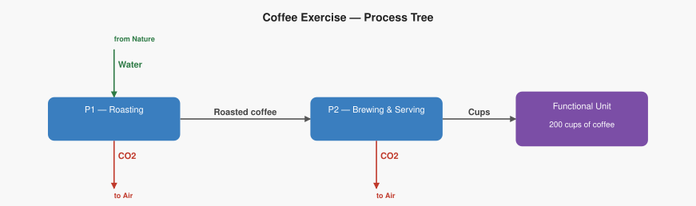
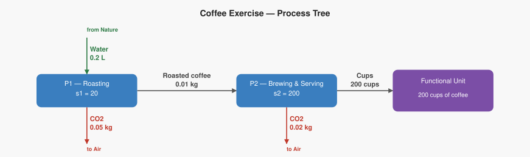

Exercise: LCA of 200 Cups of Coffee
Work through this exercise step by step. The setup is given; the calculations are yours to do. A "Check your answers" section is at the very end — try not to look until you're done.
Functional Unit
200 cups of coffee served
A coffee shop wants to know the total CO₂ released and the total water extracted from the ground to serve 200 cups of coffee, tracing back through the roasting process.
Process Tree
The system has two processes arranged as a simple chain, just like the electricity example:
| Process | Reference output | Technosphere inputs |
|---|---|---|
| P1 — Coffee roasting | 0.1 kg roasted coffee | — |
| P2 — Brewing and serving | 1 cup of coffee | 0.01 kg roasted coffee (from P1) |
P1 roasts green beans (which come from nature) into roasted coffee. P2 uses that roasted coffee to brew and serve one cup. All roasted coffee stays inside the system — none of it leaves without being brewed.
Elementary flows
| Process | Flow | Type | Rate |
|---|---|---|---|
| P1 — Coffee roasting | Water | Extraction from ground | 0.20 L per run |
| P1 — Coffee roasting | CO₂ | Emission to air | 0.05 kg per run |
| P2 — Brewing and serving | CO₂ | Emission to air | 0.02 kg per run |
Process graph (structure)

Characterization factors
To convert inventory flows into impact scores, use these factors:
| Flow | Impact category | Factor |
|---|---|---|
| CO₂ | Climate change | 1.0 kg CO₂-eq per kg CO₂ |
| Water | Water scarcity | 0.5 points per litre water |
Your Task
Work through each step below. Write your answers in the spaces provided.
Step 0a — How many runs does each process need?
We need 200 cups. Work backwards through the chain.
P2 makes _____ cup(s) per run. We need 200 cups, so:
$$ s_2 = \frac{200 \ \cancel{\text{cups}}}{___ \ \cancel{\text{cups}}/\text{run}} = ___ \ \text{runs} $$
P2 running at that level consumes _ kg of roasted coffee in total. P1 makes ___ kg per run, so:
$$ s_1 = \frac{___ \ \cancel{\text{kg}}}{___ \ \cancel{\text{kg}}/\text{run}} = ___ \ \text{runs} $$
Check — does supply meet demand?
| Flow | Produced | Consumed | Balance |
|---|---|---|---|
| Cups | ___ × ___ = ___ | delivered to functional unit | ? |
| Roasted coffee | ___ × ___ = ___ | P2 consumes ___ × ___ = ___ | ? |
Process graph (scaled)

Step 0b — Calculate total emissions and extractions
Multiply each process's rate by the total quantity it handles.
P1 — Coffee roasting (runs _____ times):
$$ \text{Water} = 0.20 \ \frac{\text{L}}{\text{run}} \times ___ \ \text{runs} = ___ \ \text{L} $$
$$ \text{CO}_2 = 0.05 \ \frac{\text{kg}}{\text{run}} \times ___ \ \text{runs} = ___ \ \text{kg} $$
P2 — Brewing and serving (runs _____ times):
$$ \text{CO}_2 = 0.02 \ \frac{\text{kg}}{\text{run}} \times ___ \ \text{runs} = ___ \ \text{kg} $$
Add across both processes:
| Elementary flow | From P1 | From P2 | Total |
|---|---|---|---|
| Water (extraction) | ___ L | — | ___ L |
| CO₂ (emission) | ___ kg | ___ kg | ___ kg |
Step 0c — Apply characterization factors
Climate change (caused by CO₂):
$$ \text{Climate} = 1.0 \ \frac{\text{CO}_2\text{-eq}}{\text{kg CO}_2} \times ___ \ \text{kg CO}_2 = ___ \ \text{kg CO}_2\text{-eq} $$
Water scarcity (caused by water extraction):
$$ \text{Water scarcity} = 0.5 \ \frac{\text{pts}}{\text{L}} \times ___ \ \text{L} = ___ \ \text{pts} $$
Step 1 — Build the technology matrix A
Columns = processes (P1, P2). Rows = products (roasted coffee, cups). Positive = produced, negative = consumed.
$$ A = \begin{pmatrix} ___ & ___ \ ___ & ___ \end{pmatrix} \quad \begin{array}{l} \leftarrow \text{Roasted coffee (kg)} \ \leftarrow \text{Cups} \end{array} $$
Step 2 — Set up the demand vector f and solve for s
$$ f = \begin{pmatrix} f_1 \ f_2 \end{pmatrix} \quad \begin{array}{l} \leftarrow \text{Roasted coffee leaving the system (kg)} \ \leftarrow \text{Cups leaving the system} \end{array} $$
- f₂ = ___ — we want 200 cups delivered to customers.
- f₁ = ___ — all roasted coffee goes straight into brewing; none leaves the system.
$$ f = \begin{pmatrix} ___ \ ___ \end{pmatrix} $$
Solve A · s = f by back-substitution:
$$ \text{Row 2 (cups):} \quad ___ \times s_2 = ___ \quad\Rightarrow\quad s_2 = ___ $$
$$ \text{Row 1 (roasted coffee):} \quad ___ \times s_1 + ___ \times ___ = 0 \quad\Rightarrow\quad s_1 = ___ $$
$$ s = \begin{pmatrix} ___ \ ___ \end{pmatrix} $$
Step 3 — Build the intervention matrix B
Convert each database rate (per product unit) to a per-run rate, then fill in the matrix.
| Process | Flow | Database rate | Outputs per run | Per-run rate |
|---|---|---|---|---|
| P1 | CO₂ | 0.05 kg / run | — | 0.05 |
| P1 | Water | 0.20 L / run | — | 0.20 |
| P2 | CO₂ | 0.02 kg / run | — | 0.02 |
$$ B = \begin{pmatrix} ___ & ___ \ ___ & ___ \end{pmatrix} \quad \begin{array}{l} \leftarrow \text{Water (L)} \ \leftarrow \text{CO}_2 \text{ (kg)} \end{array} $$
(columns left to right: $P_1$, $P_2$)
Step 4 — Compute the inventory vector R = B · s
$$ R[\text{Water}] = (___ \times ___) + (___ \times ___) = ___ + ___ = ___ \ \text{L} $$
$$ R[\text{CO}_2] = (___ \times ___) + (___ \times ___) = ___ + ___ = ___ \ \text{kg} $$
$$ R = \begin{pmatrix} ___ \ ___ \end{pmatrix} \quad \begin{array}{l} \leftarrow \text{Water (L)} \ \leftarrow \text{CO}_2 \text{ (kg)} \end{array} $$
Step 5 — Apply the characterization matrix C, get impact vector h = C · R
$$ C = \begin{pmatrix} 0 & 1.0 \ 0.5 & 0 \end{pmatrix} \quad \begin{array}{l} \leftarrow \text{Climate change (kg CO}_2\text{-eq)} \ \leftarrow \text{Water scarcity (pts)} \end{array} $$
(columns left to right: Water, CO$_2$)
$$ h[\text{Climate}] = (___ \times ___) + (___ \times ___) = ___ \ \text{kg CO}_2\text{-eq} $$
$$ h[\text{Water scarcity}] = (___ \times ___) + (___ \times ___) = ___ \ \text{pts} $$
$$ h = \begin{pmatrix} ___ \ ___ \end{pmatrix} \quad \begin{array}{l} \leftarrow \text{Climate change (kg CO}_2\text{-eq)} \ \leftarrow \text{Water scarcity (pts)} \end{array} $$
Check Your Answers
Scaling vector: - s_1 = 20 runs - s_2 = 200 runs
Inventory (R): - CO₂: 5.0 kg - Water: 4.0 L
Impacts (h): - Climate change: 5.0 kg CO₂-eq - Water scarcity: 2.0 pts
Full Matrix Solution
Step 1 — Technology Matrix A
$$ A = \begin{pmatrix} 0.1 & -0.01 \ 0 & 1 \end{pmatrix} \quad \begin{array}{l} \leftarrow \text{Roasted coffee (kg)} \ \leftarrow \text{Cups} \end{array} $$
(columns left to right: $P_1$, $P_2$)
Step 2 — Demand Vector f and Scaling Vector s
$$ f = \begin{pmatrix} 0 \ 200 \end{pmatrix} \quad \begin{array}{l} \leftarrow \text{Roasted coffee (kg)} \ \leftarrow \text{Cups} \end{array} $$
Solving $A \cdot s = f$ by back-substitution:
$$ s = \begin{pmatrix} 20 \ 200 \end{pmatrix} \quad \begin{array}{l} \leftarrow P_1 \ \leftarrow P_2 \end{array} $$
Step 3 — Intervention Matrix B
$$ B = \begin{pmatrix} 0.20 & 0 \ 0.05 & 0.02 \end{pmatrix} \quad \begin{array}{l} \leftarrow \text{Water (L)} \ \leftarrow \text{CO}_2 \text{ (kg)} \end{array} $$
(columns left to right: $P_1$, $P_2$)
Step 4 — Inventory Vector R = B · s
$$ R = B \cdot s = \begin{pmatrix} 0.20 & 0 \ 0.05 & 0.02 \end{pmatrix} \begin{pmatrix} 20 \ 200 \end{pmatrix} = \begin{pmatrix} 4.0 \ 5.0 \end{pmatrix} \quad \begin{array}{l} \leftarrow \text{Water (L)} \ \leftarrow \text{CO}_2 \text{ (kg)} \end{array} $$
Step 5 — Characterization Matrix C and Impact Vector h = C · R
$$ C = \begin{pmatrix} 0 & 1.0 \ 0.5 & 0 \end{pmatrix} \quad \begin{array}{l} \leftarrow \text{Climate change (kg CO}_2\text{-eq)} \ \leftarrow \text{Water scarcity (pts)} \end{array} $$
(columns left to right: Water, CO$_2$)
$$ h = C \cdot R = \begin{pmatrix} 0 & 1.0 \ 0.5 & 0 \end{pmatrix} \begin{pmatrix} 4.0 \ 5.0 \end{pmatrix} = \begin{pmatrix} 5.0 \ 2.0 \end{pmatrix} \quad \begin{array}{l} \leftarrow \text{Climate change (kg CO}_2\text{-eq)} \ \leftarrow \text{Water scarcity (pts)} \end{array} $$
Summary
To produce 200 cups of coffee: - Extract 4.0 L of water from the ground - Emit 5.0 kg of CO₂ to the atmosphere - Climate change impact: 5.0 kg CO₂-eq - Water scarcity impact: 2.0 points